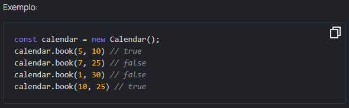
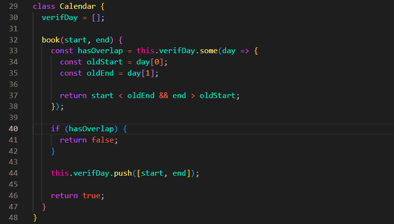

Calendar class
`Escreva uma classe Calendar com um método book em suas instâncias. O método aceita dois inteiros start e end - o início e o fim do evento, e os adiciona ao agendamento caso não se sobreponha aos já salvos. Se o evento for adicionado, retorne true, caso contrário, false.
Observe que um evento pode começar assim que o anterior terminar.

Resultado:
